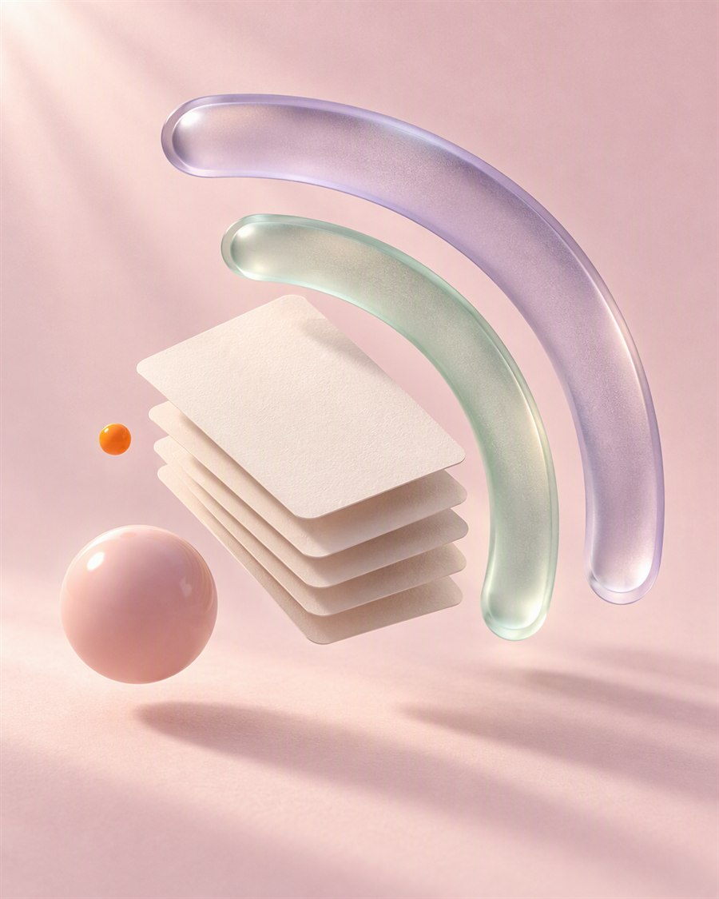
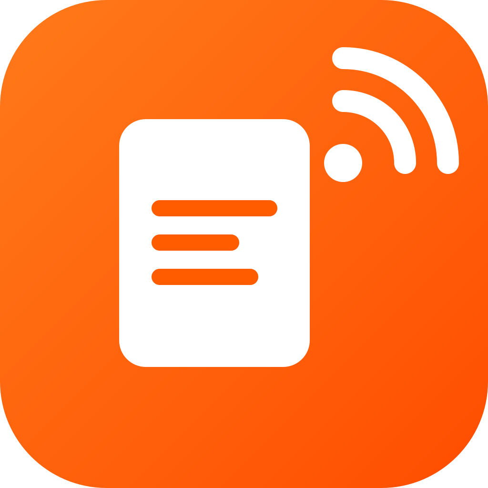
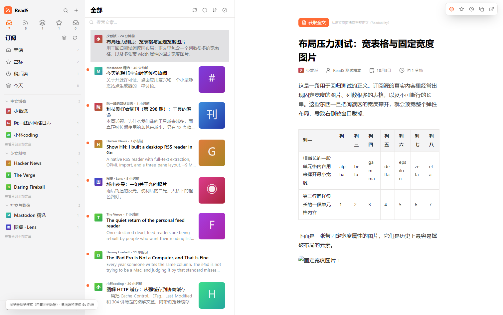
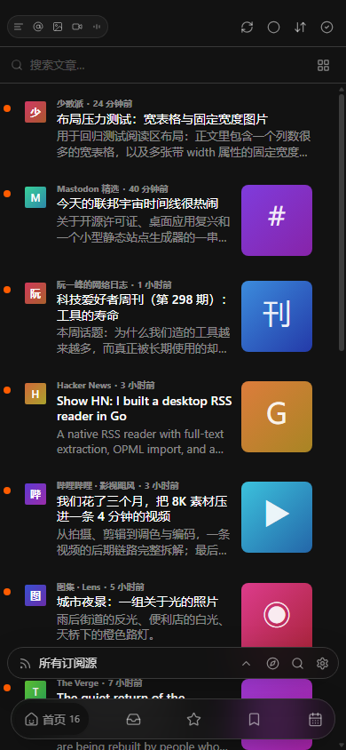
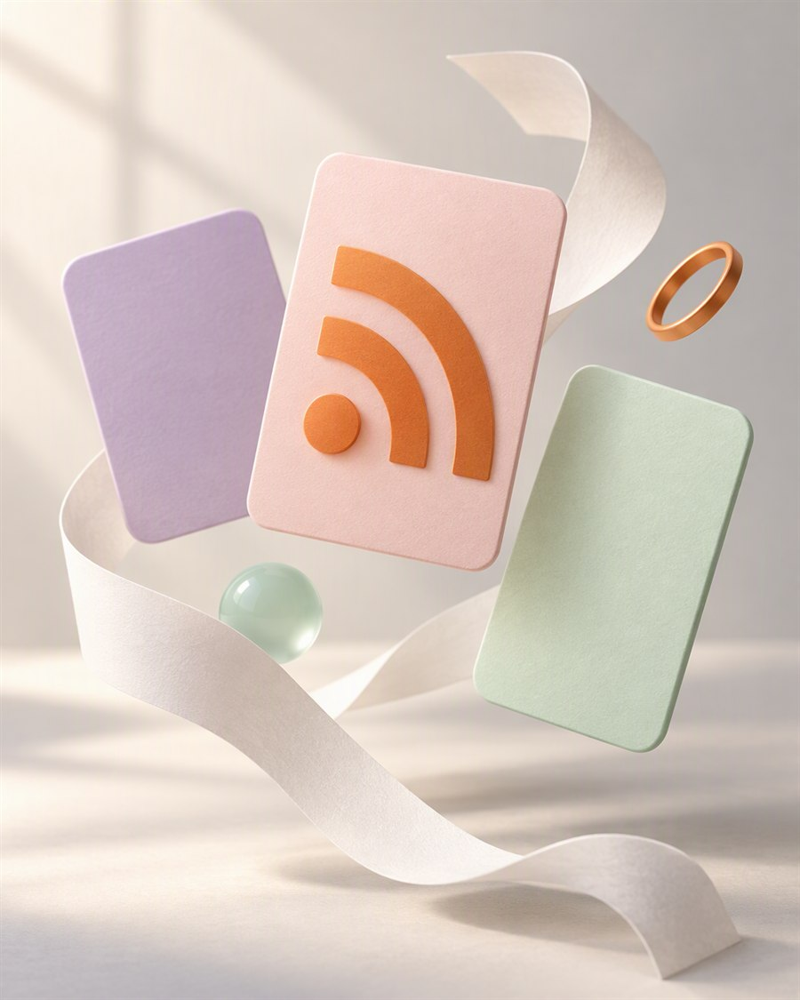
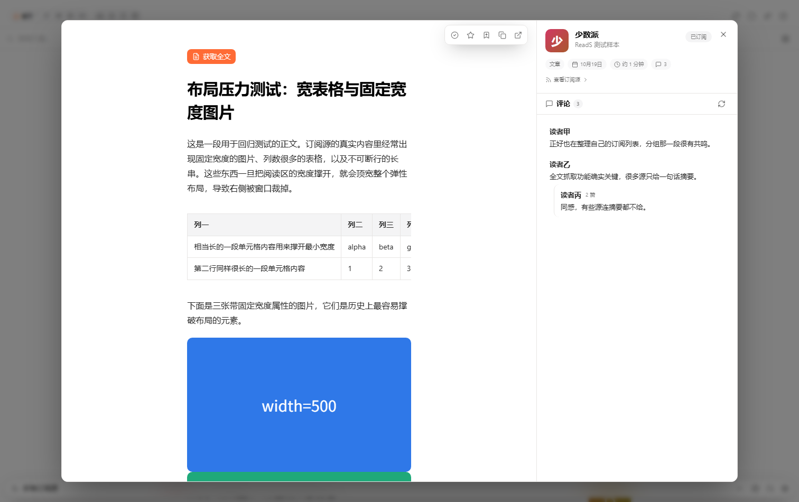

01
品牌主张
别让算法，
替你决定下一篇。
RSS 没有过时。它只是需要一间更安静的房间。ReadSS 把订阅放回桌面，把选择权放回你手里。


ReadSSRSS, REIMAGINED
ReadSS 是一个把订阅、长文、播客与评论放回同一张桌面的 RSS 阅读器。没有算法替你挑，只有你亲手留下的信息。
RSS 没有过时。它只是需要一间更安静的房间。ReadSS 把订阅放回桌面，把选择权放回你手里。

不是让你读得更多，而是让值得读的内容更容易抵达。
只留下你真正想读的来源，时间线按你的选择发生。
不靠停留时长与情绪标签编排，让顺序保持清楚。
文章、图片、视频与播客，各自归档又彼此相邻。
订阅、已读与播放进度留在本机。没有账号墙，也没有遥测。
桌面优先的阅读空间。窗口收窄，内容仍然稳稳地待在自己的位置。


产品截图 · 内容为演示数据
色彩从来源中生长出来，让时间线有迹可循，也让每一次停留都更像一段完整的故事。

全文、评论、播客与订阅管理，都收进一张安静的桌面。

留下称呼和邮箱，展开申请表。所有输入都只在这个浏览器里完成校验，不会发往任何服务商。
不发送 · 不存储 · 仅本地校验
RSS 的新时代，不是让信息跑得更快，而是把决定权留在你手里。